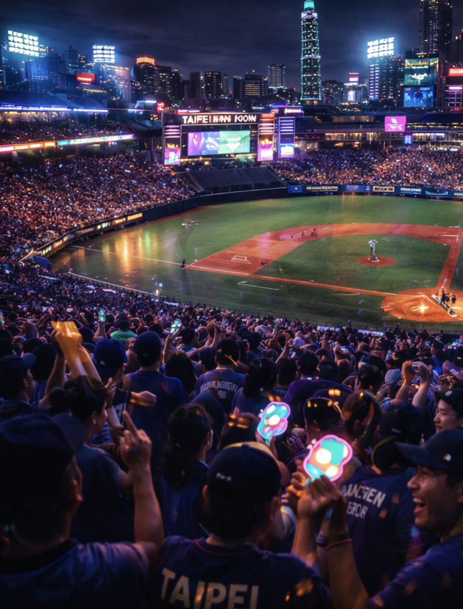
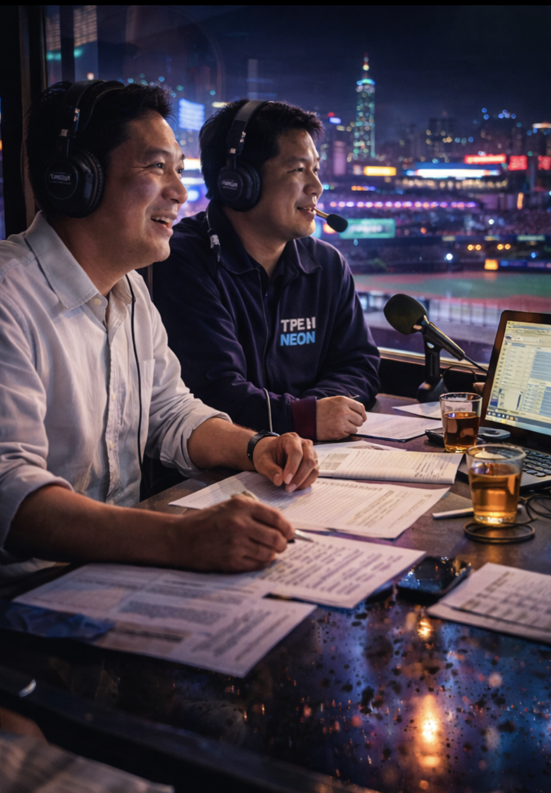
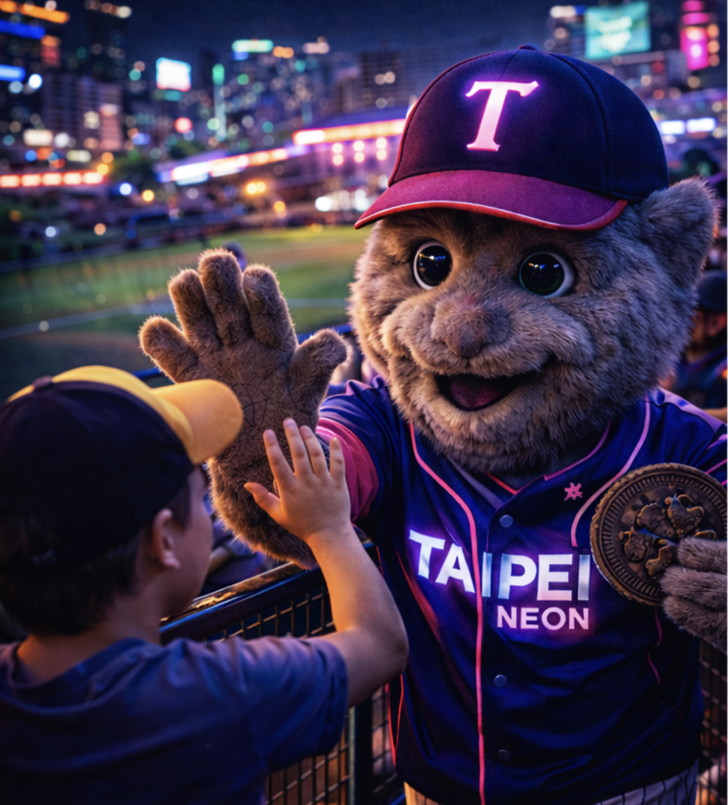
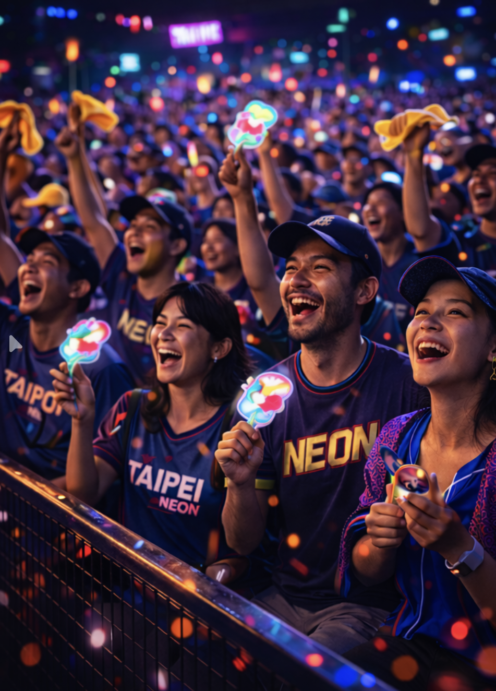

Taipei plays fast in the glow. The Neon are a rhythm team—quick innings, quick swings, quick decisions—built to weaponize momentum. Their home games feel like a night market: bright signage, moving crowds, and a constant hum that never fully goes quiet. They don’t overpower; they overwhelm.

Lantern Loop Park. A compact stadium stitched into the city—wet pavement, glowing signage, and warm light bouncing off concrete. When the humidity rises, the whole outfield looks like it’s lit from within.

Voice of the Neon. Hsu calls games like he’s tracking a storm system—calm, precise, and always a half-second ahead of the action. The booth feels open to the city: glass, reflections, and the field humming below.

A human-worn mascot built for the aisles—friendly, slightly scuffed, and always in motion. Glow isn’t “cute.” Glow is crowd energy with legs.

Fans arrive dressed for heat and rain at once. Neon accents, towels, small charms—nothing uniform, but unmistakably Taipei. The noise comes in waves, like traffic.
| SS | Ren “Quickstep” Liang |
| CF | Hao “Flashline” Wu |
| P | Daichi “Slipstream” Mori |